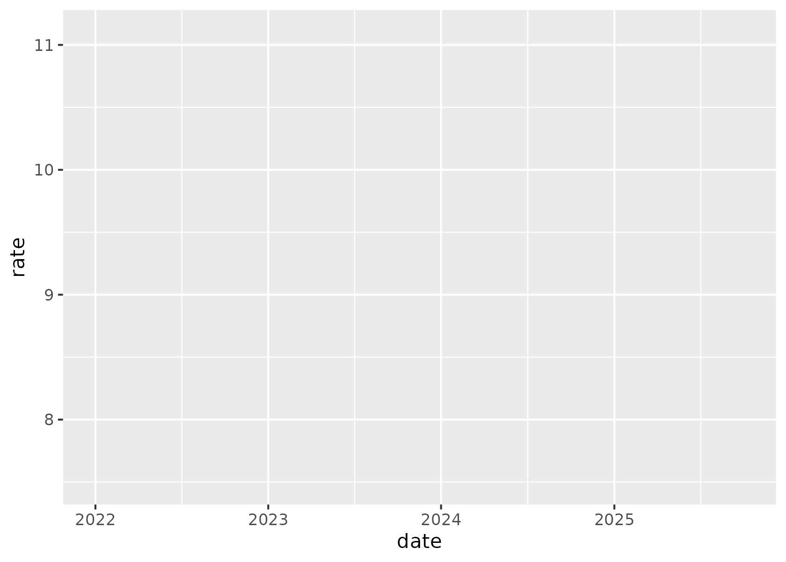
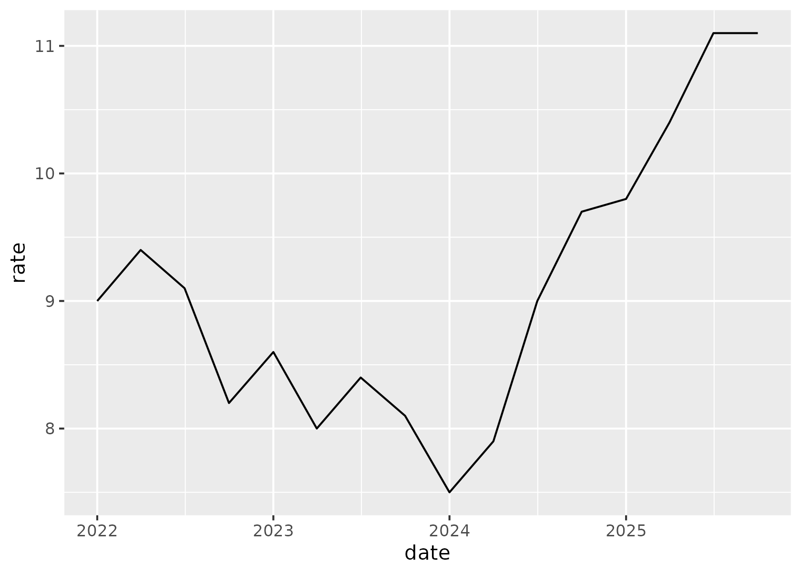
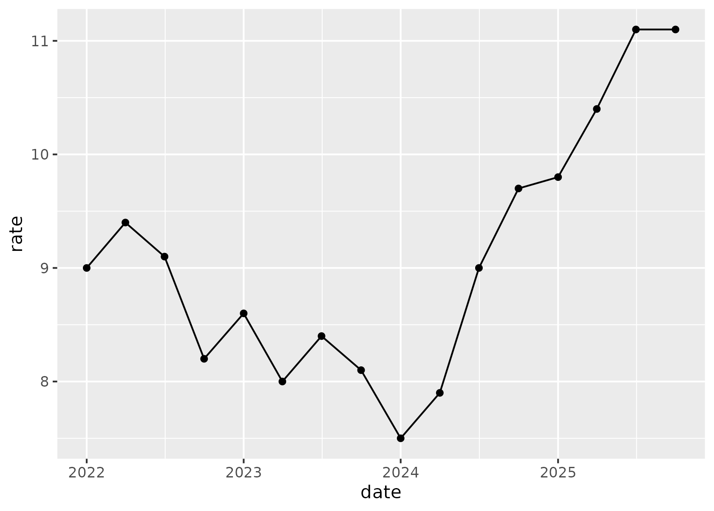
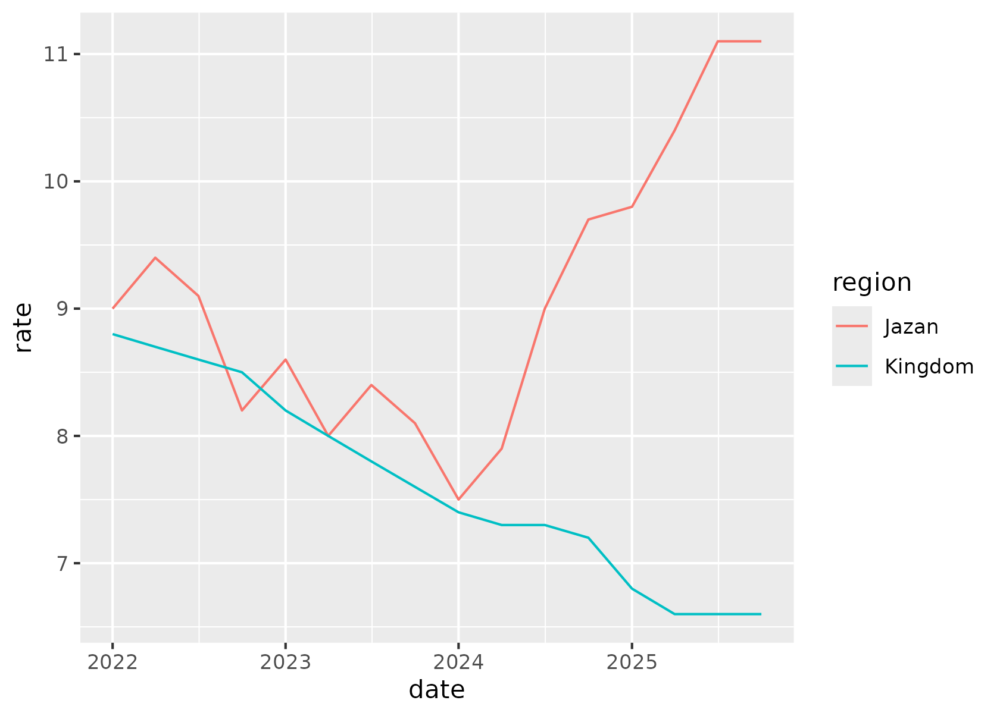
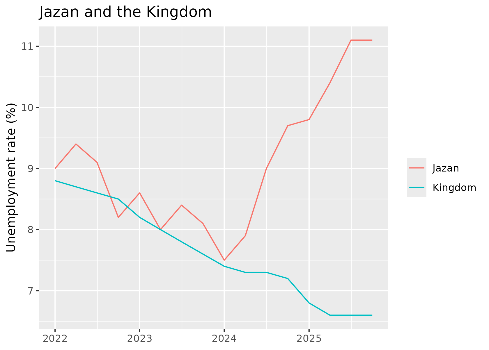
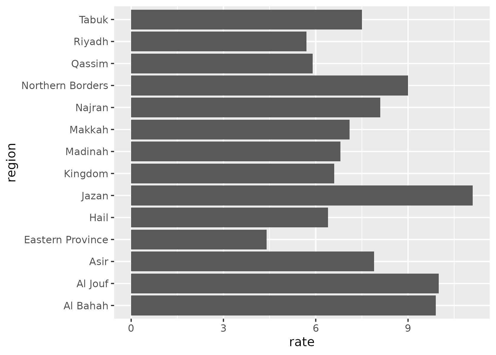
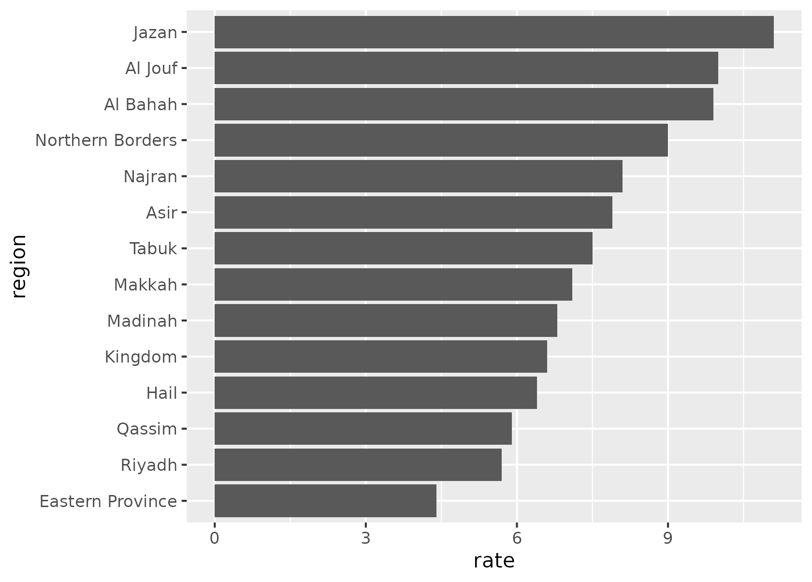

ggplot() تأخذ البيانات، وaes() تحدد مكان كل عمود: date على المحور الأفقي، وrate على الرأسي. وما دام ما فيه طبقة، يرسم R المحاور بس.geom_line() توصل الأرباع الـ 16 بخط. وفي ggplot2 تنضاف الطبقات بعلامة +، لا بعلامة |>.+ تحط طبقة جديدة فوق اللي قبلها، وgeom_point() تحط نقطة على كل ربع فوق الخط.%in% تُبقي الصفوف اللي منطقتها في القائمة. ولمّا نربط colour بالعمود region، يرسم ggplot خطًا لكل منطقة بلونها، ومعه مفتاح للألوان.labs() تكتب عنوان الرسم وأسماء المحاور. وNULL تشيل أي اسم ما يحتاجه القارئ: السنوات واضحة بنفسها، وكذلك اسم كل منطقة.geom_col() ترسم عمودًا لكل صف: كل المناطق في آخر ربع. ولمّا تكون الأسماء على المحور الرأسي تنقرأ الـ 14 كلها، لكن الأعمدة جاية بترتيب الحروف.fct_reorder() ترتّب المناطق حسب معدلها، فتتدرّج الأعمدة من الأقل إلى الأعلى. رتّب الأعمدة بقيمها لا بالحروف، والقارئ يشوف الترتيب على طول.